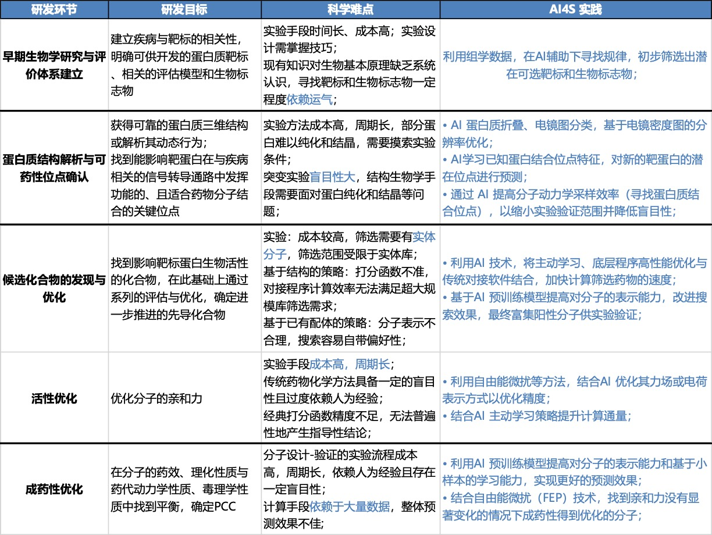

AI4S大模型一则范例
2024-10-08T23:43:55+08:00 | 5 分钟阅读 | 更新于 2024-10-08T23:43:55+08:00

神经网络揭秘GPCR-G蛋白偶联选择性
看到头图的研究还是非常震惊的，二元分类神经网络用来预测范围广泛的GPCR家族的G蛋白选择性了，并找到了一些相关的pattern。
以往需要大量电镜、晶体结构解析才能得到的推论现在看似乎也是有理可依。要知道GPCR靶点的药物效果或side effect最重要的就是看下游偶联的G蛋白，如果某一天对应关系的密码被揭开，那么设计特异性激活某条通路的药物不说一马平川，也算是成功了大半。
对于分类问题，最常用的算法是传统机器学习领域的常用算法，如scikit-learn库中的算法，包括支持向量机(SVM) 、决策树、梯度提升和k-近邻算法等，这些之前在kaggle竞赛中都有使用过，但感觉大部分效果都没有卷积神经网络好，特别对于图像这种高维数据的处理，CNN往往可以自动提取特征进行泛化。但传统的机器学习方法似乎也很好用，比如这篇文章使用的多层感知机（MLP）⬇️
10 个神经网络分类器处理这些任务。神经网络由两个全连接层（分别为 128 个和 16 个神经元）、一个压平层 (Flattening Layer) 、三个全连接层（分别为 128 个、 32 个和 4 个神经元）以及一个输出层（1 个神经元）组成，内层由校正线性单元 (ReLU) 激活，最后进行批量归一化。输出层通过 sigmoid 函数激活。
算法任务
1 、针对 GPCRs 的偶联性，判断某种 GPCR 能否与 G 蛋白偶联，即振幅 >0%；
2、针对 GPCRs 的选择性，判断某个 GPCR-G 蛋白偶联体能够迅速激活，即激活率 >30% 。
本文发现，普遍的GPCRs-Gα偶联中，GPCRs使用ICL2、H8和大部分TM残基与Gα蛋白相连。绝大多数结构主要与H5相连，而ICL2的连接更为广泛。
GPCRs与Gαi/o和Gαq家族的蛋白偶联模式类似，唯一的区别在于GPCRs与前者的连接严重依赖TM6，而与后者的连接则不需要。
进一步结合GPCRs-G蛋白的选择性顺序，调查特定结构对不同家族Gα蛋白的影响。首先，判断与Gαi/o结合的GPCRs能否与Gα15结合，并对比二者残基网络的差异。与前者相比，GPCRs与后者的连接切断了ICL3和H4的联系，弱化了ICL2-H5的交互，强化了TM4-HN和ICL2-s2s3的连接。这说明ICL2与其他残基的联系可能是GPCRs与Gαi/o或Gα15相连的主要区别。
结论
GPCRs与Gαs的连接中，ICL2和ICL3的份额大幅减少，而更依赖TM3和TM5。上述结果表明，不同家族的Gα蛋白与GPCRs的连接依赖于不同的结构。
研究方法
对于数值结果，如蛋白-配体结合的亲和力等，常用回归算法求解，如多元线性回归、支持向量机和深度学习网络等。

AI在GPCR药物研发各阶段的作用
最近的成果多使用多层感知器、卷积神经网络 (CNN) 等深度学习算法进行预测。随着深度学习生成算法的发展，蛋白质配体和结构设计愈发高效和准确。生成对抗性网络 (Generative Adversarial Network) 、循环神经网络 (Recurrent Neural Network) 、强化学习等算法可以利用向量空间的自动构造和自适应度量来探索更大的生成空间。
论文链接： https://doi.org/10.1016/j.celrep.2023.113173
AI4S药物研发新范式
资料分享： AI for Science 论文解读合集（持续更新ing)
AI for Science方向的大模型
| 模型名称 | 开发者 | 主要应用 | 特点 | 应用场景 |
|---|---|---|---|---|
| AlphaFold | DeepMind | 蛋白质三维结构预测 | 重大突破，基于深度学习和进化信息 | 药物设计、蛋白质功能预测、疾病研究 |
| RoseTTAFold | 华盛顿大学 David Baker 实验室 | 蛋白质结构预测 | 简洁，硬件需求低 | 蛋白质结构预测、蛋白质相互作用预测 |
| ProtGPT2 | 科学家社区 | 蛋白质序列生成 | 生成符合生物学规则的蛋白质序列 | 新蛋白质设计、合成生物学 |
| BioBERT | 韩国AIRS和首尔大学 | 生物医学文本处理 | 基于BERT，专注于生物医学领域的NLP任务 | 生物医学文献分析、药物发现、医疗诊断 |
| EvoFold | 科学家团队 | RNA二级结构预测 | 基于进化信息和深度学习 | 基因调控、RNA治疗药物开发 |
| DNABERT | NIH（美国国立卫生研究院） | DNA序列分析 | 基于BERT，专注DNA序列识别 | 基因组功能注释、遗传变异分析 |
| OmegaFold | Helix研究团队 | 蛋白质结构预测 | 优化处理长距离相互作用，适用于新颖序列预测 | 蛋白质工程、新药研发 |
| OpenFold | 开源社区 | 蛋白质结构预测 | 开源、可定制，增强了可解释性 | 蛋白质结构研究、模型优化 |
| MegaMolBART | NVIDIA 和 AstraZeneca | 化学分子生成与预测 | 基于BART架构，专为化学分子数据训练 | 药物化学、新分子发现、化学反应预测 |
大模型语言的学习
1. XGBoost（XGB）
应用场景：
- 金融行业：用于信用评分、欺诈检测、贷款违约风险预测等问题。
- 推荐系统：帮助构建商品推荐系统，提升用户转化率。
- 医学领域：用于基因表达数据分析、疾病预测等。
学习路线：
- 基础机器学习概念：了解决策树、梯度提升树等算法。
- XGBoost原理：学习XGBoost的优化技术，如损失函数与正则化。
- 实践应用：使用Python库实现XGBoost模型。
推荐书籍：
- 《Python Machine Learning》 by Sebastian Raschka and Vahid Mirjalili
- 《Hands-On Machine Learning with Scikit-Learn, Keras, and TensorFlow》 by Aurélien Géron
推荐资源：
2. 图神经网络（GNN）
应用场景：
- 社交网络分析：用于预测用户关系和社区检测。
- 化学分子分析：用于分子结构预测、药物发现。
- 推荐系统：基于用户-物品的交互图进行个性化推荐。
学习路线：
- 图论基础：学习图的基本概念如节点、边、邻接矩阵。
- 神经网络基础：掌握深度学习和神经网络的相关知识。
- 图神经网络原理：学习GCN、GraphSAGE、GAT等图神经网络模型。
- 应用实践：使用GNN处理社交网络或分子图数据。
推荐书籍：
- 《Deep Learning on Graphs》 by Yao Ma and Jiliang Tang
- 《Graph Representation Learning》 by William L. Hamilton
推荐资源：
3. Transformer
应用场景：
- 自然语言处理（NLP）：用于机器翻译、文本生成、问答系统等。
- 计算机视觉：应用于图像分类、目标检测等任务。
- 时间序列预测：用于股票预测、天气预报等。
学习路线：
- 自然语言处理基础：学习RNN、LSTM等NLP基础知识。
- Attention机制：理解Transformer中的自注意力机制。
- Transformer结构：掌握编码器、解码器及多头注意力等原理。
- 应用Transformer：实践使用BERT、GPT等模型进行文本处理。
推荐书籍：
- 《The Illustrated Transformer》 by Jay Alammar
- 《Natural Language Processing with Transformers》 by Lewis Tunstall, Leandro von Werra, and Thomas Wolf